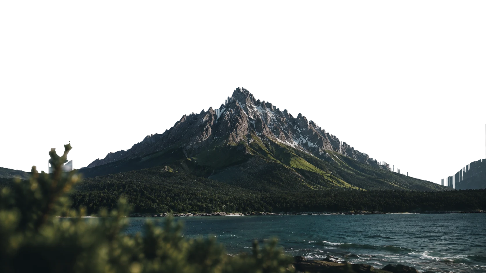

Landing pages e sites que
elevam sua marca.
Código
Feita para o topo. Páginas à altura da sua marca.
Tudo o que sua empresa precisa para sair de uma ideia solta a uma presença digital que sustenta o preço que você cobra.
Landing Pages
Uma página, um objetivo: transformar quem chega em conversa qualificada.
Sites institucionais
Para quando o cliente pesquisa sua empresa antes de responder — e precisa encontrar autoridade.
Portfólios
Seu trabalho apresentado como merece: imagem grande, texto curto, nada competindo.
Redesign
Sua página atual não está errada — está desatualizada. Nós a trazemos para hoje.
UI/UX Design
Hierarquia clara, caminho óbvio: o visitante entende sem esforço o que fazer.
Responsividade real
A maioria dos seus visitantes chega pelo celular. Projetamos por ali primeiro.
Sua página negocia por você antes da primeira conversa.
O cliente decide em segundos se você é a escolha evidente ou apenas mais um orçamento a comparar. Essa decisão acontece na tela, sem você presente.
Preço sem desconto
Quem parece caro é questionado menos. O design sustenta o valor que você cobra.
Entendido em 5 segundos
Se o visitante precisa procurar o que você faz, ele já foi para o próximo.
Contato no lugar de visita
Estrutura, texto e um único caminho conduzem até a mensagem no seu WhatsApp.
Estar online é o mínimo. Sua página precisa fazer o cliente confiar antes de falar.
Por trás da Montis: Diego Martins.
Transformamos ideias, serviços e marcas em experiências digitais que unem design, estratégia e conversão. Criamos landing pages modernas e personalizadas, pensadas para transmitir profissionalismo, destacar o que torna cada negócio único e transformar visitantes em oportunidades reais.
Trabalho com poucos projetos por vez por escolha. Cada página passa inteira pelas minhas mãos, do primeiro rascunho ao domínio no ar, e quem responde a sua mensagem é quem está construindo o seu site. Se o que está no ar hoje já não representa o tamanho do que você faz, é sobre isso que conversamos primeiro.

Como um projeto acontece.
Cinco etapas, prazo definido em cada uma e nada acontecendo sem você saber.
Briefing
Uma conversa para entender o negócio, o cliente e a meta da página.
Estratégia
Estrutura, texto e direção visual decididos antes de desenhar.
Design
A estratégia virando tela, com sua aprovação a cada versão.
Desenvolvimento
Código próprio, leve, testado em celular, tablet e desktop.
Publicação
Revisão final, domínio configurado e sua página no ar.
O que já subiu.
Projetos entregues e no ar — clique para ver cada um.
Sua marca merece ganhar altitude.
Conte em duas linhas o que você precisa. Respondemos com um caminho possível, prazo e valor — sem compromisso.
Começar meu projeto